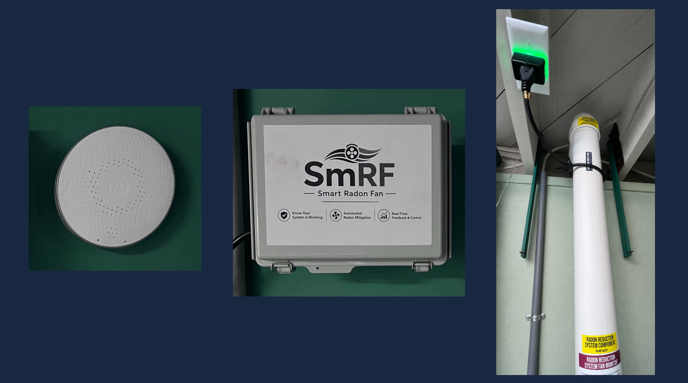
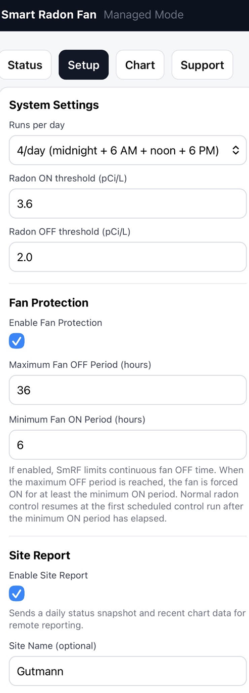
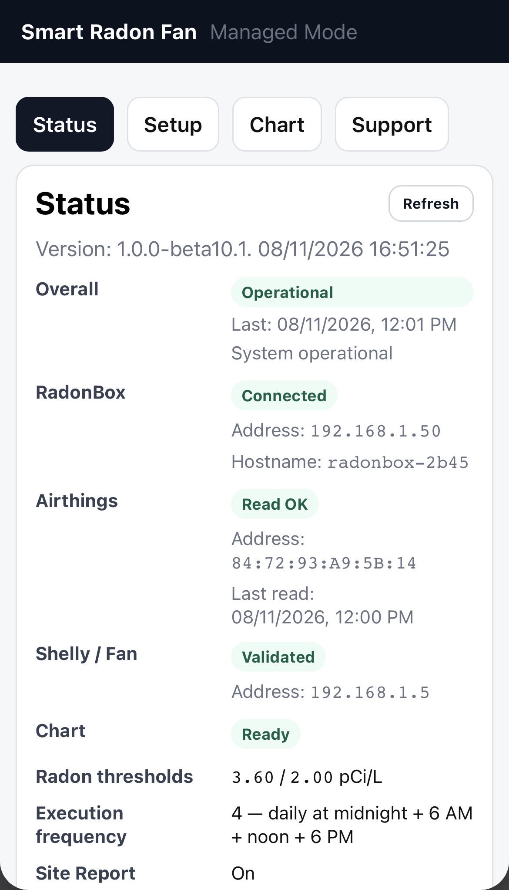
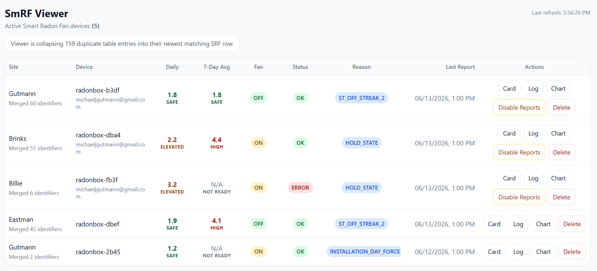

Residential Radon Solutions, LLC
Radon mitigation control, monitoring, and management
Smart Radon Fan
A working control and management platform for residential radon mitigation.
SmRF uses continuous radon measurements to control mitigation, verify system operation, maintain performance history, report remotely, and manage installed systems.
A working radon control & management platform
SmRF today is a working implementation of the platform for conventional ON/OFF residential fans. It closes the loop between radon measurement, fan control, operating verification, historical reporting, and site management.
The system
A Continuous Radon Monitor provides measurements, SmRF makes the control decision, and the fan interface operates the mitigation fan.

The results
Radon measurements and fan state are recorded together so mitigation response can be seen over time.

The control
Managed Setup provides installer control of radon thresholds, run frequency, Fan Protection, Site Reporting, and installation identity.

The status
Managed Status verifies the operating state of the SmRF controller, CRM, fan-control path, charting, thresholds, execution frequency, and Site Reporting.

The management
SmRF Viewer provides remote visibility into radon levels, fan state, decision reason, system status, reporting activity, historical charts, and multiple installations.

SmRF Today: Measure → Control → Verify → Report → Manage
Today's SmRF applies this platform to conventional residential ON/OFF radon fans, including local fault-tolerant control and installer-selectable Fan Protection.
From ON/OFF to variable-rate & adaptive control
Variable-rate fan technology expands what SmRF can control. Instead of deciding only whether a fan should be ON or OFF, the same platform can regulate how much mitigation is appropriate.
From ON/OFF to variable-rate control
The architecture remains the same. The available control range becomes much richer.
Adaptive control
Variable-rate control creates the opportunity for SmRF to learn how an individual installation responds to different fan operating rates and use that history to make increasingly informed mitigation decisions.
The objective is to achieve and maintain the desired radon result.
SmRF Next describes the direction of the platform as variable-rate residential radon fans become available and suitable manufacturer control interfaces emerge.
The architecture stays. The control capability expands.
SmRF is not evolving from a prototype into a platform. SmRF already is the control and management platform. Variable-rate fans expand what that platform can do.
Field development
Current SmRF beta installations are demonstrating control, reporting, remote management, and fault-tolerant behavior while providing field data for continued development.
Working SmRF installations today
- Continuous radon measurement
- Automated fan control
- Fan Protection
- Local fault-tolerant operation
- Cloud reporting and Viewer management
Interested in the next generation of radon mitigation?
SmRF is interested in discussions with radon researchers, mitigation professionals, CRM developers, and fan manufacturers around variable-rate fan control, adaptive mitigation, field evaluation, and installation management.
SmRF
Radon mitigation control, monitoring, reporting, and management — with a platform designed to evolve with radon mitigation technology.